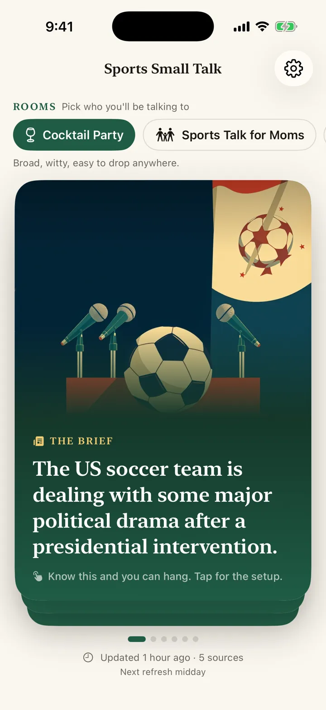
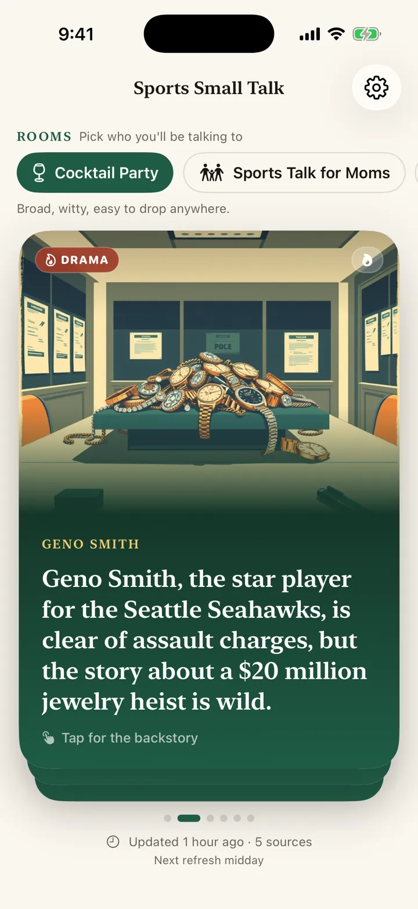
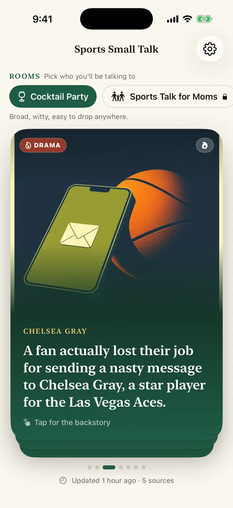
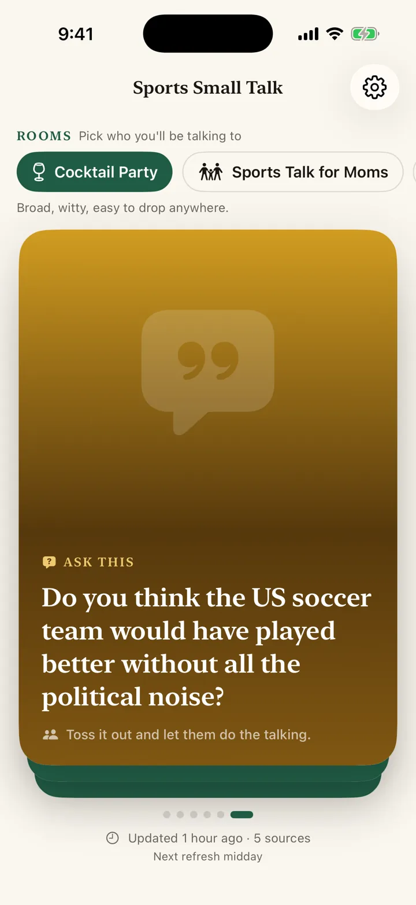

Sports Cheat Sheet is a sports small talk app for non-fans: the sports everyone is talking about, explained in five minutes, so you can keep up without watching every game.
iPhone · Sports briefing · No account required
Download on the App Store



It gives you fast, finite, source-cited briefings on soccer and the sports everyone is talking about.
A daily national briefing with broad sports stories that can work in almost any room.
Every talking point includes a source headline and link, so you can check the original reporting in one tap.
The app keeps the last successful briefing on-device, so you are not stuck if the elevator has no signal.
Office Watercooler, Date Night, Sports Talk for Moms, Cocktail Party, and Local Team.
Included with Pro
Morning, midday, and evening refreshes for when the sports world moves faster than your group chat.
Included with Pro
Talking points for the teams people around you actually care about.
Included with Pro
No. Sports Cheat Sheet does not need your email, contacts, comments, or follows. The app fetches cached briefings and uses RevenueCat only for Pro entitlement status.
Privacy Policy →What it is, what it is not, and how it works.
Sports Cheat Sheet is for people who do not follow sports closely but still want to feel included at work, at dinner, with family, or at a party.
Open the app, read one short briefing, remember one line, and ask one good question.
Not a scores app. No leaderboards, standings, box scores, or fantasy tools.
Not a news reader. The app frames conversation points and links to the original source. It does not reproduce full articles.
Not for die-hard fans. If you already have 4 sports podcasts, you probably do not need this. That is fine.
| Platform | iOS 17+ |
| Language | SwiftUI with Swift 6 settings |
| Backend | Supabase Edge Functions and Postgres |
| AI | Gemini server-side generation from curated RSS sources |
| Purchases | RevenueCat with local Pro gating |
| Privacy | No accounts, no social graph, no user-generated feed |
Finite. You are supposed to finish the briefing.
Plain language first. The model writes for a person walking into a room, not for a sports desk.
Sources. Every bullet keeps a visible source link.
Quick answers about the app.
Yes. Sports Cheat Sheet: Daily News is an iPhone app that gives you a short daily briefing on the sports stories people are talking about, with talking points you can say out loud and one question to ask a fan.
Read one short briefing, remember one line, and ask one good question. Sports Cheat Sheet explains what happened, why people care and the background you missed, so you can join in without watching every game.
Yes. The briefing comes in conversation settings for cocktail party, office watercooler, date night, sports talk for moms and your local team, so the talking points fit the room.
Yes. The Cocktail Party briefing is free every day. The optional Pro upgrade unlocks all five settings, up to three refreshes a day and Local Team, and prices are shown in the app before you buy and vary by region.
No. It has no scores, standings, box scores or fantasy tools, and it does not reproduce articles. Each talking point links to the original source so you can read the full story.
The app keeps the last successful briefing on your iPhone, so you can still read it without a signal. There is no account, email or sign-up.
Free Cocktail Party briefing. The Pro upgrade is available monthly, yearly, or as a one-time lifetime purchase, with all contexts, 3 daily refreshes, and Local Team. Prices are shown in the app before you buy and vary by region.
Download on the App Store